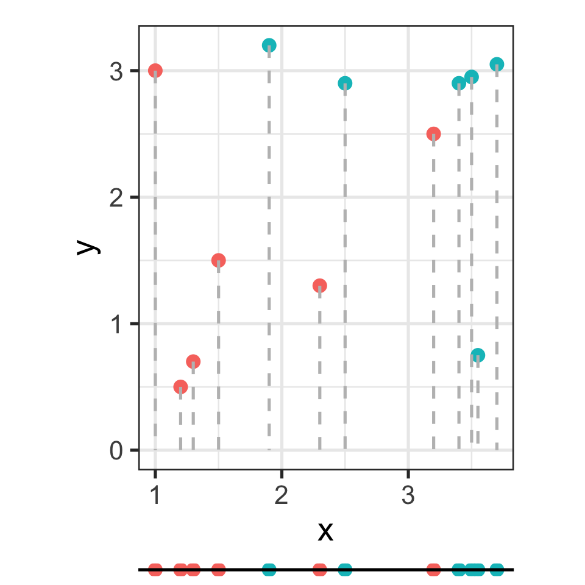
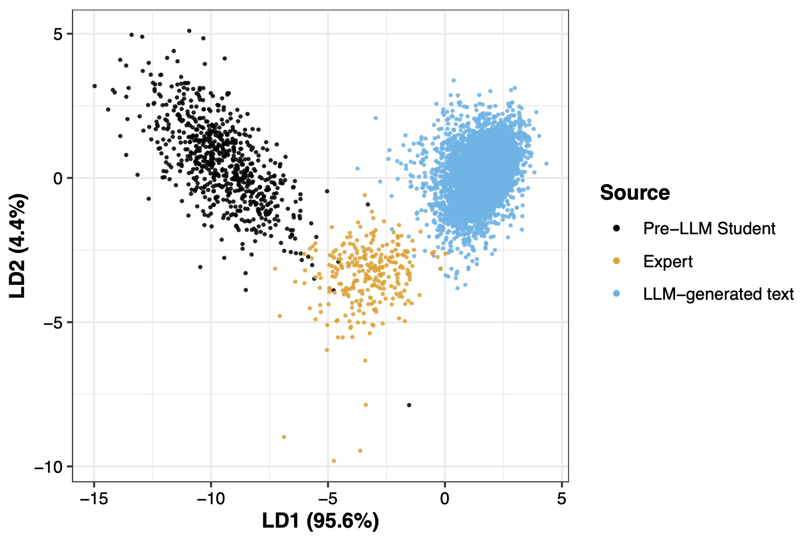
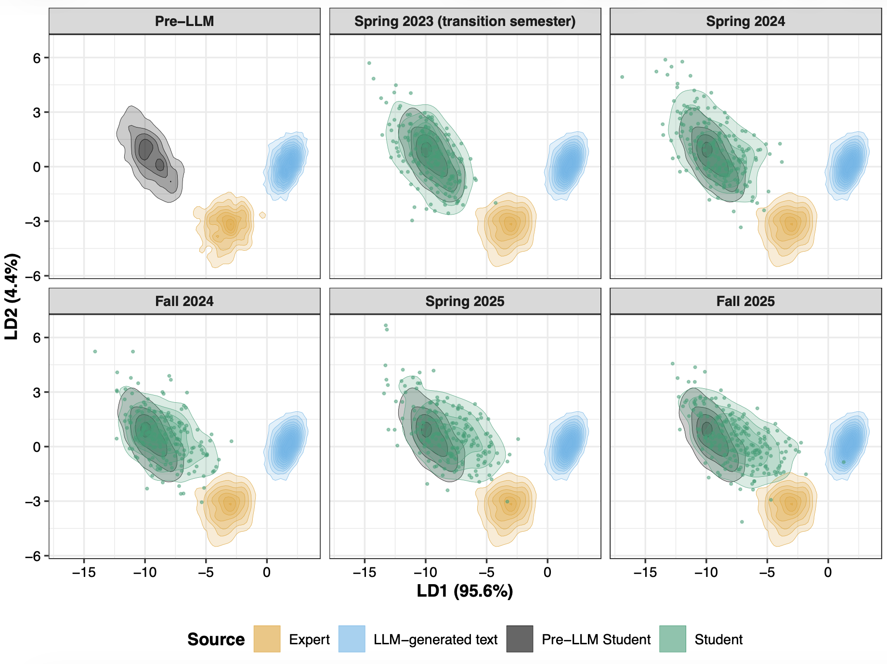
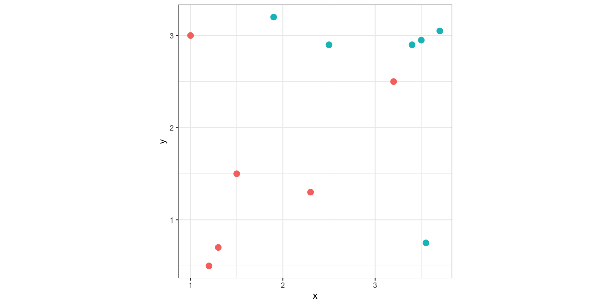
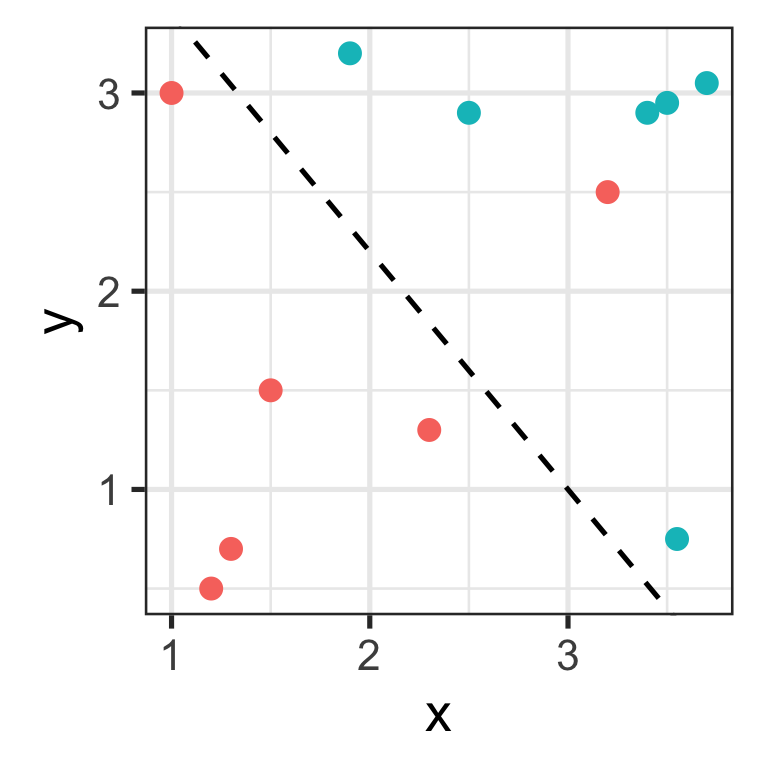
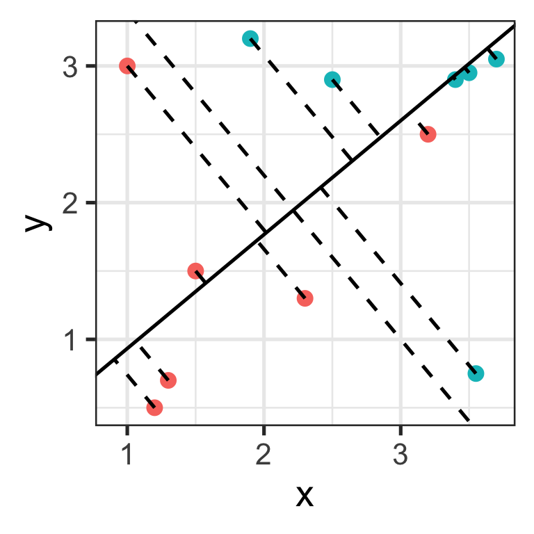
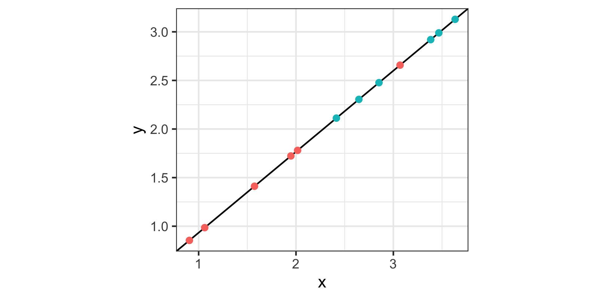
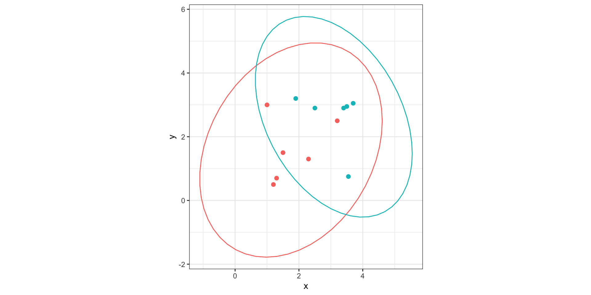
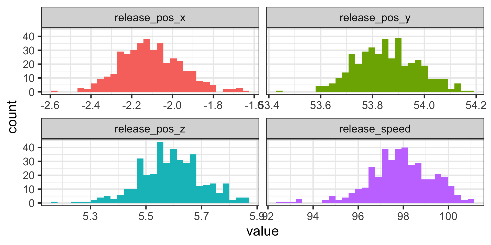
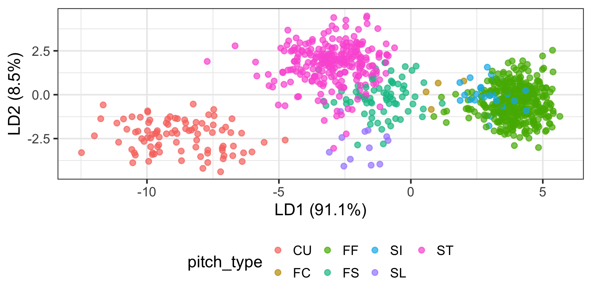

Supervised Learning: Linear Discriminant Analysis
CMSACamp 2026
Department of Statistics & Data Science
Carnegie Mellon University
Principal Components Analysis (PCA) Recap
Unsupervised method of dimensionality reduction that aims to find the directions of maximum variance in a dataset
End goal is to have a smaller set of variables (principal components) that capture the most important patterns in the data. These principal components
- are linear combinations of the features
- are mutally uncorrelated
Keep the principal components that explain a certain percentage of the total variance in the data
Overview of LDA
Aims to find the linear combination of features that best separates the classes in a dataset
- This makes LDA a supervised learning method for dimensionality reduction
End goal is to reduce the dimensionality of the data while preserving the information that is most relevant for class discrimination

Examples of problems using LDA
Based on a patient’s set of medical features, should we classify the patient as healthy or suffering from a particular disease?
Given a product’s various measurements or attributes, should we classify it as defective or non-defective?
Given the a text’s set of stylistic features, is it most likely written by a student, expert, or large language model? Sara and Erin’s preprint
LDA for text classification

LDA for text classification

LDA visually
Let’s say we are interested in deciding whether to give someone a medication based on two features: \(x\) and \(y\).
- Blue: responders to the medication
- Red: non-responders to the medication

LDA visually
For a two-class problem, LDA finds a single projection direction that maximizes the separation between classes relative to the variation within classes.
The original data are projected onto this axis, reducing the problem from \(p\) dimensions (where \(p\) = number of predictors, here \(p=2\)) to one dimension.
What’s the best way to determine the projection direction?
- One option (bad) is to ignore \(y\) and project the data down onto the \(x\) axis.
LDA visually
LDA finds the projection direction that produces the greatest separation between responders and non-responders
This is perpendicular to the boundary that we might draw if we were separating these points by hand (dashed line on left plot)


LDA visually
We can now see the data projected onto the new axis in a way that maximizes the separation between responders and non-responders!

Finding the “best” axis
LDA builds the model on two matrices.
First, the between-group sum-of-square matrix, which measures the differences between the class means:
\[B=\sum_{k=1}^g n_k(\bar{X}_k-\bar{X})(\bar{X}_k-\bar{X})^\top\]
Second, the within-group sum-of-squares matrix, which measures the variation of values around each class mean:
\[W =\sum_{k=1}^g\sum_{i=1}^{n_k} (X_{ki}-\bar{X}_k)(X_{ki}-\bar{X}_k)^\top\]
Finding the “best” axis
The linear discriminant space is generated by computing the eigenvectors of \(W^{-1}B\).
This is the \((g-1)\)-D space where the group means are most separated with respect to the pooled variance-covariance matrix.
In other words, LDA asks which direction gives the greatest separation of the groups relative to their within-group spread.
- The answer is the eigenvector corresponding to the largest eigenvalue of \(W^{-1}B\).
The pooled covariance matrix
\(W\) can be considered the pooled within-class covariance (or scatter) matrix.
LDA makes two assumptions
The cluster structure corresponding to each class forms an ellipse, showing that the class is consistent with a sample from a multivariate normal distribution
The variance of values around each mean is nearly the same. More specifically, the classes have approximately equal covariance matrices.
Let \(X\) denote the vector of predictor variables for one individual. In the toy example, \(X = (x, y)^T\)
\[X \vert \text{class}=A \sim \mathcal{N} \left(\begin{pmatrix} \mu_{Ax} \\\mu_{Ay} \end{pmatrix}, \Sigma\right)\] \[X \vert \text{class}=B \sim \mathcal{N} \left(\begin{pmatrix} \mu_{Bx} \\\mu_{By} \end{pmatrix}, \Sigma\right)\]
LDA assumes that the covariance matrix \(\Sigma = \begin{pmatrix} \sigma_x^2 & \sigma_{xy} \\ \sigma_{xy} & \sigma_y^2 \end{pmatrix}\) is shared across classes.
The pooled covariance matrix
The constant covariance assumption means the multi-dimensional spread and correlation of the features are identical across groups, differing only by their central means.
LDA is known to be quite robust and often performs well even if this assumption is slightly violated.
- For example, the covariance ellipses for the toy dataset are not equivalent, but we’d likely proceed with LDA.
If we have evidence the assumption is broken, we’d proceed with quadratic discriminant analysis.

Assigning observations a class
Given a new observation \(x\), for each class we compute
\[\delta_k(x) = (x-\mu_k)^\top W^{-1}\mu_k + \log \pi_k\]
where \(\pi_k\) is prior probability for class \(k\) that might be based on unequal sample sizes, or cost of misclassification.
The LDA classifier rule is to assign a new observation to the class with the largest value of \(\delta_k(x)\).
Adding more dimensions
The number of axes is equal to \(\text{min}(g-1, p)\), where \(g\) is the number of classes and \(p\) the number of predictors.
The first axis provides the greatest separation among the classes relative to within-class variation.
Subsequent axes explain additional independent patterns of class separation and are ordered according to their discriminating power.
Data: Shohei Ohtani pitches
Using by Shohei Ohtani’s pitches in 2026, we will explore whether we can classify what pitch Ohtani threw using relase speed and release location.
EDA on Ohtani’s pitch tendencies
How often does Ohtani throw each pitch, and how do their speeds vary?
Step 1: Preparing the data
First, determine class and variables of interest. Our research question will be: can we discern Shohei Ohtani’s pitch types from his release speed and position?
Next, create training and test data
Step 2a: Checking multivariate normality assumption
Testing for exact multivariate normality in high dimensions is difficult.
You may run multivariate normality tests such as the Marida, Royston, Henze-Zirkler tests with the MVN package
If a set of variables is multivariate normal, each univariate marginal distribution also follows a normal distribution.
- Keep in mind, the reverse isn’t true

Step 2b: Checking constant covariance assumption
To check the constant covariance assumption, we can use ellipse plots or compare covariance matrices across pitch types.
The boxM R function performs the Box’s (1949) M-test for homogeneity of covariance matrices obtained from multivariate normal data according to one or more classification factors
- Keep in mind this test may reject for small differences in large sample sizes.
Step 2b: Checking constant covariance assumption
release_speed release_pos_x release_pos_y release_pos_z
release_speed 1.971256959 -0.017667338 -0.005732747 -0.012137379
release_pos_x -0.017667338 0.022447561 -0.001797893 0.003135986
release_pos_y -0.005732747 -0.001797893 0.014400863 0.006774757
release_pos_z -0.012137379 0.003135986 0.006774757 0.012716692 release_speed release_pos_x release_pos_y release_pos_z
release_speed 4.52154035 -0.054506558 -0.116245061 -0.075872895
release_pos_x -0.05450656 0.022813982 -0.001454202 0.004980956
release_pos_y -0.11624506 -0.001454202 0.024003618 0.011297655
release_pos_z -0.07587289 0.004980956 0.011297655 0.020695709Step 3a: Fitting the LDA
What does each part of the output tell us?
Call:
lda(pitch_type ~ ., data = train)
Prior probabilities of groups:
CU FC FF FS SI SL
0.108108108 0.004700353 0.462984724 0.082256169 0.035252644 0.014101058
ST
0.292596945
Group means:
release_speed release_pos_x release_pos_y release_pos_z
CU 74.85761 -1.686522 54.12609 6.221087
FC 92.35000 -2.097500 54.00000 5.652500
FF 97.88706 -2.104365 53.85589 5.588629
FS 88.70143 -2.027857 53.85300 5.701143
SI 95.98000 -2.001000 53.83500 5.539000
SL 87.75833 -1.812500 54.01167 6.046667
ST 84.68474 -2.159639 53.97269 5.608032
Coefficients of linear discriminants:
LD1 LD2 LD3 LD4
release_speed 0.5310726 -0.148456 0.06852352 -0.005563438
release_pos_x 0.4957792 -2.605971 -0.60794252 6.274800557
release_pos_y 1.4299659 2.238575 7.55008417 3.560140678
release_pos_z -1.7777530 -7.696766 -0.28812708 -5.731013975
Proportion of trace:
LD1 LD2 LD3 LD4
0.9113 0.0850 0.0023 0.0014 Step 3b: Plotting the LDA
prop <- lda_mod$svd^2 / sum(lda_mod$svd^2)
percent <- round(100 * prop, 1)
scores <- predict(lda_mod)$x
scores_df <- data.frame(LD1 = scores[, 1], LD2 = scores[, 2], pitch_type = train$pitch_type)
ggplot(scores_df, aes(x = LD1, y = LD2, color = pitch_type)) +
geom_point(alpha = 0.7) +
theme_bw()+
labs(x = paste0("LD1 (", percent[1], "%)"),
y = paste0("LD2 (", percent[2], "%)"))+
theme_bw(base_size = 20)+
theme(legend.position = "bottom")
Step 4: Making predictions
Step 5: What features contribute?
We didn’t standardize the variables beforehand, so we cannot use the size of the coefficients to understand which variables drive each axis
- If we had standardized beforehand, we might be able to interpret like “A one sd increase in release speed changes the LD1 score by about X units, whereas a one sd change release height changes LD1 by only about Y units”.
However, we can calculate the correlation of the LD scores with each variable.
Connecting to other concepts
Let’s discuss! How does LDA relate to PCA? What about clustering?